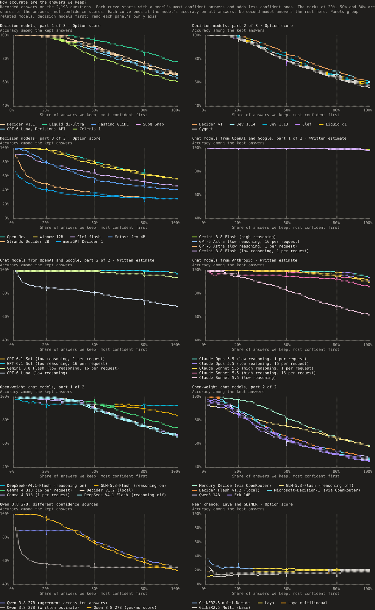
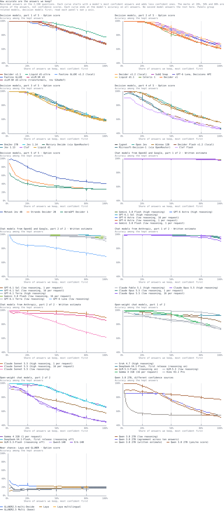
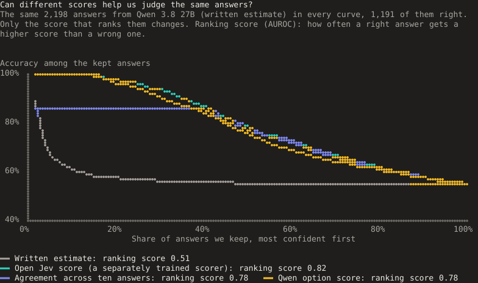
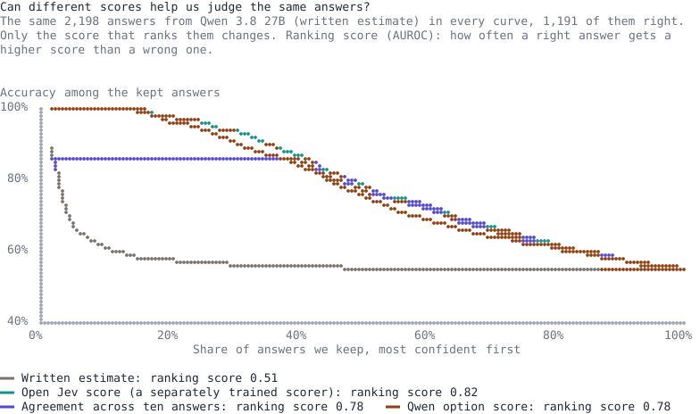
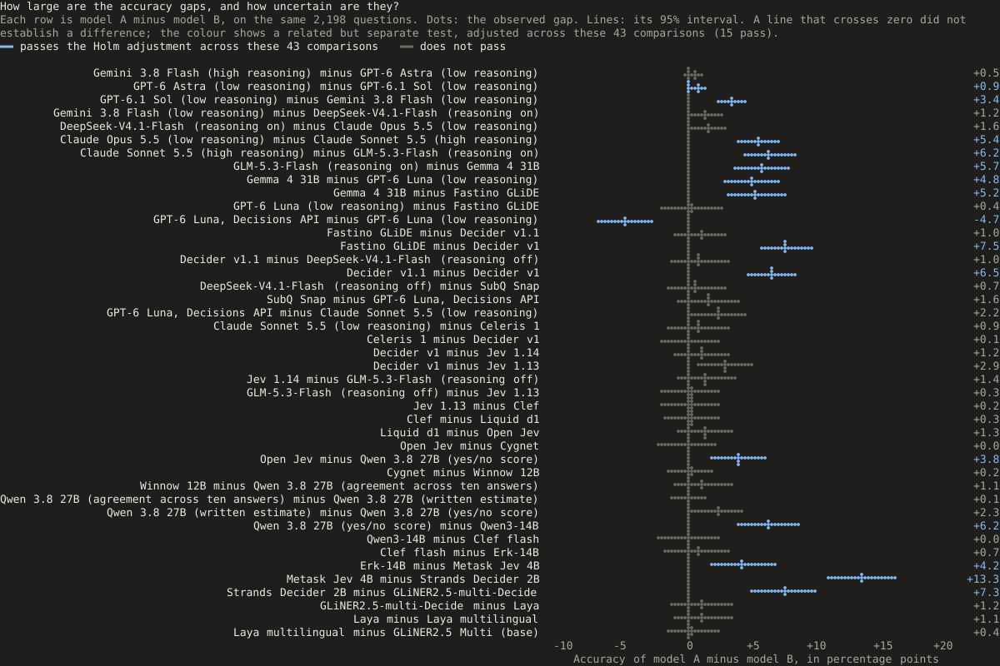
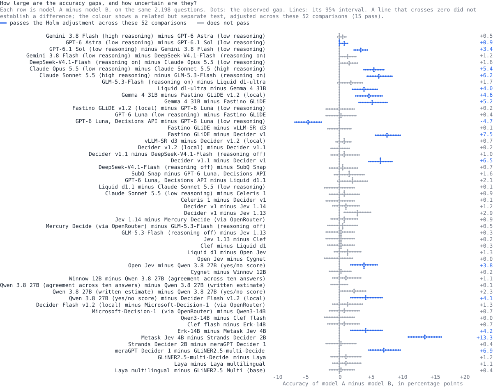

Method
How we tested confidence, cost and accuracy
We tested 32 models in 45 setups on a reading comprehension and grammar test in native Turkish (not translated): 2,198 questions. A setup is one model with one set of settings. We measured four things: how often each was right, whether its confidence found the answers worth keeping, whether it answered the same way again, and its cost and time.
What we found
No model led on every measure: accuracy, ranking answers by confidence and confidence that matches the hit rate are separate strengths. Gemma 4 31B, a chat model, scored higher than every decision model except d1-ultra on Reading (90.9%) and Grammar (65.6%), but its confidence matched its hit rate less closely than the best decision models' did.
How a model gives its confidence matters. GPT-6 Luna through OpenAI's Decisions API ranked its answers better than Luna writing its confidence (ranking score 0.82 against 0.69) but got fewer right (63.6% against 68.3%), with a different access method and request size. Among decision models, it had the smallest calibration gap: 2.4 points.
Cheaper chat models remain alternatives. GPT-6.1 Sol scored 96.7% at an estimated cost 79% below GPT-6 Astra's (97.6%). Gemini 3.8 Flash at high reasoning scored 98.1%, and the test over all pairs did not establish a difference from Astra.
Erk-14B is Qwen3-14B with extra Turkish training by eCloud. Its calibration gap was 13.5 points against 41.0 for its base, with no accuracy difference detected (45.0% against 45.7%); the training may have changed more than language knowledge.
On Artificial Analysis' Decision Index (English tasks), Jev 1.13 leads with 58, ahead of GLiDE and Microsoft-Decision-1 (54). Our order differs. In both tests, confidence is less reliable on some question types: knowledge and reasoning there, grammar here.
The questions
The test has 656 Reading and 1,542 Grammar questions in 20 topics, so 70% are Grammar. These results cover this question bank only. We did not test whether they hold in other languages or for other tasks. Reading asks about the meaning of words, sentences and passages; Grammar asks about word endings, word types and sentence structure. We report the two separately.
Topics 1 to 6 are Reading and 7 to 20 Grammar; the Topics page gives each one's results. Each question has five options: guessing averages 20%, and always choosing E, the most common right letter, scores 22.7%. Models can favour some letters whatever the question says.8
An optional exam mix reweights the scores to the Turkish section of the first stage of Turkey's 2026 university entrance exam (TYT): 33 Reading and seven Grammar questions. It is not a score on the exam itself.
TurkishMMLU3 covers more than 10,000 Turkish questions in nine school subjects, and HELM4 sets accuracy beside calibration and efficiency. We study the decision models' own option scores, and using them to decide when another model should answer. We do not know what most models saw in training, so we cannot test whether less familiar tasks cause more mistakes.
How we checked the questions and answer key
We use version 2 of the question set. Our first copy of the book lost the underline in 196 of 229 questions that point to underlined words, and the numbers attached to words in 186 more; we copied flagged questions again and checked them against the page images. Version 2 changes the text or key of 375 questions and makes 12 more possible to score.
Wrong keys are common in test sets and can change rankings.20 We reviewed 25 disputed cases (confident mistakes, and questions where several strong models disagreed with the key), confirmed 13 keys and removed 12 questions: in six the page image did not settle the answer, and in six the printed key could not be established. We score 2,198 questions; 12 stay marked uncertain, and 493 carry a verified label.
The removal raised most models' accuracy by at most about 0.5 points but mattered more for confident mistakes. Among wrong answers at 99% or more, it removed six of eight for Qwen's yes or no scoring, three of eight for Astra, two of three for Jev 1.13 and two of three for d1. Later runs did not get this targeted review.
For models tested on both versions, accuracy on the repaired questions rose 11 to 30 points, apart from Laya and Laya multilingual, whose accuracy on them did not rise. Removed questions stay out of accuracy and confidence, but their time, tokens and money stay in the totals.
Every setup is scored on the same frozen key, version 2. A fix needs a check against the book's key or a second reviewer, and it rescores every run under a new version; the key changelog lists every change.
The source is the practice book TYT IQ Turkish Question Library (title translated) from Paraf, ISBN
978-625-7423-18-2 (© 2022, no edition number). We do not publish its copyrighted questions; with the book, the scripts in the
repository's runner folder rebuild a matching set, matched by each question's ID, topic, page and number.
Models and setups
A decision model scores the options we give it, and we used only its pick and its scores. A chat model writes its answer, and some reason first. Luna through the Decisions API counts as a decision model, because the service gives a probability for each option.
A setup is one way of running a model: access, reasoning setting, questions per request and other settings. We tested 45 setups of 32 models. Each name links to its setup's page; the results file keeps each identifier, server and hardware.
| Model or setup | Why we included it |
|---|---|
| Jev 1.14.0 and Jev 1.13.0 | TypeSafe's hosted decision model, versions 1.13 and 1.14; Open Jev compares with 1.13. |
| Liquid d1-ultra, Perplexity Decider 27B v1.1, Perplexity Decider 27B v1 and Liquid d1 | Perplexity's Decisions API (two versions) and Liquid's free tier. |
| Clef | Cloudflare's model, on our hardware: it adapts Qwen 3.8 27B and scores all options in one pass. |
| Clef-flash | Cloudflare's smaller model: Qwen 3.5 9B, with Clef's scoring method and release code. |
| Metask-Jev 4B | It adapts Qwen 3.5 4B and lists Turkish among its training languages. |
| Cygnet | blockbrain-ai's recipe on an unchanged Gemma 4 12B IT, served by vLLM: answer letter probabilities rescaled with a temperature of 3.4. |
| Winnow-12B | Gemma 4 12B IT trained for decisions, published only as GGUF files: the recommended Q8_0 file (eight bits per weight) on its author's llama.cpp-based server. |
| Fastino GLiDE | Fastino's System One API. GLiDE reasons more on uncertain cases, which we could not switch off. |
| Celeris-1 Decision | Celeris's System One API: probabilities rounded to whole points, no model size or design published. |
| SubQ Snap Preview | SubQ's Decisions API, in public preview, with no model size or design published. |
| Strands Decider 2B | Amazon's released model: an adapter and a scoring part on Qwen 3.5 2B Base, with its own server. |
| Laya and Laya multilingual | Both released models, on our hardware; each scores all options in one pass. |
| GLiNER2.5 Multi (base) | Fastino's 287 million parameter text classifier, scoring the options as labels: a much smaller baseline. |
| GLiNER2.5-multi-Decide | The same 287 million parameter model, trained by Fastino for decisions. |
| Open-Jev 27B v1.1 | The released open model, with its own scoring part and calibration setting. |
| Qwen3.8-27B | Open Jev's base model and prompts without its trained parts: the preference for Yes over No, with a calibration temperature of 1. |
| Qwen3.8-27B | The base model chooses an option and writes its confidence. |
| Qwen3.8-27B | Ten sampled answers: the most common one, with the share that agrees as confidence. |
| Gemini 3.8 Flash, GPT-6 Astra, GPT-6.1 Sol, Claude Opus 5.5, Claude Sonnet 5.5 and GPT-6 Luna | Chat models for comparison; each writes a confidence estimate. Sonnet and Gemini Flash ran with low and with high reasoning. |
| GPT-6 Luna | OpenAI's Decisions API, in beta, one question per request. The other Luna run writes its confidence through Codex, 16 questions per request. |
| DeepSeek-V4.1-Flash and Gemma 4 31B | On our hardware, with answer letter probabilities. DeepSeek's reasoning run also samples. |
| GLM-5.3-Flash | Z.ai's model with TensorFold: 320 billion parameters, about 18 billion used per token (a mixture of experts); it writes its confidence. Mia's AI Lab's EXL3 checkpoint, with DFlash2 speculative decoding. |
| Qwen3-14B and Erk-14B | Erk continues this Qwen model's training on Turkish text; both ran with the same requests and settings. |
What we sent and which settings we used
Each question went with its lettered options. Chat models were asked, in Turkish, for their answer's letter and, where needed, a confidence score, in a structured reply (JSON); a connector turned the same question into each decision service's format. Most chat setups got 16 questions per request; decision models, Luna through the Decisions API, GLiNER and the Qwen 3.8 setups got one.
Claude Code and Codex runs were closed-book: no web search, no file or command tools, and an empty folder for each request. Earlier trial runs could find the source book online.
A missing answer, a refusal or a letter outside the options counts as wrong. The Decisions API declined 4 questions; GLM 5.3 Flash with reasoning left 128 unanswered when it hit the 65,536-token output limit; DeepSeek's reasoning run had the same limit and left 0.
| Setup | How it chose each token |
|---|---|
| Chat models on our hardware, reasoning off | Greedy decoding: the most likely next token |
| DeepSeek, reasoning on | Sampling, temperature 1.0, top p 1.0 (greedy decoding made its reasoning loop) |
| GLM 5.3 Flash, reasoning on | Server default: temperature 1.0, top p 0.95 (Z.ai's settings), top k 20; TensorFold's high reasoning |
| Qwen, ten answers | Temperature 0.7, top p 0.8, top k 20, presence penalty 1.5 |
| GPT, Claude and Gemini | Lowest reasoning setting, plus high reasoning for Sonnet and Gemini Flash; temperature not always settable; Gemini reported no reasoning tokens at low |
Sampling picks the next token at random by its probability. Temperature sets how strongly it favours likely tokens, top p and top k limit the candidates, and a presence penalty discourages repeats.
Does one question per request change the answers?
Every decision model got one question per request; the chat models' main runs got 16. So we asked six chat setups all 2,198 questions again, one per request, with the same prompt and settings.
| Setup | 16 questions per request | 1 question per request | Change | Exact McNemar test, Holm-adjusted |
|---|---|---|---|---|
| Claude Sonnet 5.5 (high reasoning) | 85.03% | 89.17% | 4.14 points higher95% interval: +2.77 to +5.51 points | p < 0.0001 |
| Gemini 3.8 Flash (low reasoning) | 93.27% | 97.13% | 3.87 points higher95% interval: +2.92 to +4.82 points | p < 0.0001 |
| Claude Opus 5.5 (low reasoning) | 90.45% | 93.31% | 2.87 points higher95% interval: +1.67 to +4.07 points | p < 0.0001 |
| GPT-6.1 Sol (low reasoning) | 96.68% | 96.72% | 0.05 points higher95% interval: −0.55 to +0.64 points | p = 1 |
| GPT-6 Astra (low reasoning) | 97.59% | 97.41% | 0.18 points lower95% interval: −0.69 to +0.32 points | p = 1 |
| Gemma 4 31B (reasoning off) | 73.11% | 66.79% | 6.32 points lower95% interval: −8.06 to −4.59 points | p < 0.0001 |
The exact McNemar test uses only the questions one run got right; Holm's correction covers this table. Each run with one question per request is a setup of its own.
An earlier test on 200 questions found no difference: Astra got 197 right with one question per request and 195 or 196 in five runs with 16, and Gemma 137 against 141 in five runs from an earlier server session.
Where each confidence score comes from
- Option score
- The probability a decision model, GLiNER or Qwen's yes or no scoring gives the chosen option.
- Written estimate
- A number GPT, Claude, Gemini, GLM or Qwen writes next to its answer.
- Answer letter probability
- For Gemma, DeepSeek, Qwen 3 14B and Erk, the probability of writing the chosen letter, rescaled over the option letters to 100%; with reasoning on, it comes after the reasoning.
- Agreement across ten answers
- The share of Qwen's ten answers that agree with the most common one (eight of ten gives 80%).
We test each mechanism against the real answers before we trust it. Some services round: Luna through the Decisions API gave 80 distinct scores across 2,194 answered questions, and Celeris 75 across 2,198, none above 97%; our calculations handle tied scores.
How Open Jev turns option scores into probabilities
Open Jev adds a LoRA adapter, 15.5 million adjustable values (about 0.06% of the base model), and a scoring head to a Qwen model. Each option gets its own prompt, and the head starts from Qwen's preference for "Yes" over "No". Softmax turns the scores into probabilities after dividing them by 2.53, the calibration temperature (see the model card).
Another positive temperature never changes the winning option within a question, but it can reorder confidence across questions. We use the chosen option's ordinary probability, not the rescaled score Jev and Open Jev also offer. Open Jev scored 3.8 points above Qwen's yes or no scoring (p = 0.0073 after adjustment), with ranking scores of 0.82 and 0.80.
Its probabilities were too low here. Its highest confidence was 64.98%, yet all 144 answers scored 50% to below 60% were right. On version 1 of the question set, a separate refit of the temperature cut the calibration gap from 22.8 to 3.0 points, while the ranking score moved from 0.8193 to 0.8191; the main results use the released model.
How we measure accuracy and confidence
Accuracy is the share of scored questions a model got right. The ranking score (AUROC) is how often a randomly chosen right answer has higher confidence than a randomly chosen wrong one, with half credit for ties: 0.50 is chance, 1.00 perfect.
Keeping only the most confident answers is called selective prediction.10 The most confident 20% takes that share of answers with the highest scores and checks how many are right; the 50% and 80% shares work the same way. They describe the kept answers only.




Calibration asks whether the percentages match the hit rate: of 100 answers scored near 80%, about 80 should be right. The calibration gap (ECE)11 sorts answers into ten confidence groups (0% to below 10%, and so on) and compares each group's average confidence with its share right. It averages these gaps, weighting larger groups more, in points. Zero means a match within the groups, not that every score is right; the chart leaves out groups with fewer than 20 answers.


What a score of 99% or more meant
At 99% or more, Jev 1.13 got 311 of 312 right, d1 273 of 274, Decider v1 21 of 21 and GLiDE 121 of 121; Luna got 365 of 368 through the Decisions API and 693 of 830 writing its confidence. Few answers leave wide intervals: the 95% interval for the error rate is 0% to 15.5% for Decider v1 and 0% to 3.1% for GLiDE.
Gemma's letter probability reached 99% on 1,782 answers, 1,450 of them right (about 81%). DeepSeek with reasoning gave every answer at least 99%, and about 92% were right.
Can another confidence method make the same answers easier to judge?
We scored one fixed set of Qwen 3.8 27B answers, 1,191 right of 2,198, four ways. The ranking score was about 0.51 for written confidence, 0.78 for Qwen's option score, 0.78 for agreement across ten answers and 0.82 for Open Jev, a separately trained model. Written confidence tends to bunch at high values,12 while large models' answer probabilities can match their hit rates well.13
The most common of ten answers scored 54.3%, against 54.2% for written confidence, and only about 85% were right when all ten agreed. Several answers can repeat one mistake.




How we tell a score gap from ordinary variation
Both models answer the same questions, so we look at the questions only one got right. The exact McNemar test17 asks whether that split is too uneven for equal accuracy. Holm's method adjusts the p values for the number of tests: across 44 selected comparisons, and across all 990 pairs for the comparison groups (setups sharing a letter). A result from one set does not carry over to the other.
Astra scored 0.9 points above Sol: of 36 questions only one got right, Astra had 28 and Sol 8. The adjusted p was 0.036 among the selected comparisons and 0.13 across all pairs, below and above 0.05. A p value says how unusual so uneven a split would be at equal accuracy, not the chance that the models are equal.
DeepSeek with reasoning scored 1.6 points above Opus with low reasoning (adjusted p 0.6). Not establishing a difference does not show equal accuracy: many language comparisons have too few questions to detect gaps this small.18




How we measure uncertainty
A result from one question set is an estimate. For the ranking score and the accuracy of kept answers, we draw 1,000 bootstrap samples of the questions with replacement, keeping the 14 questions of seven shared passages together. For small groups, such as answers at 99% or more, a Wilson interval gives an error rate above zero even with no mistakes. A 95% interval comes from a method that covers the true value in about 95% of repeated studies, under its assumptions; it is not a model's confidence.
The live tests report their comparisons without Holm's adjustment. Replays with a cutoff chosen on half the questions average 300 random splits of this one question set, not new question sets.
How we chose which answers to keep
A cheap model answers first; we keep its answer when its confidence reaches a cutoff, and a stronger model answers the rest. FrugalGPT5 and RouteLLM6 study related routing. We count the first model's cost on every question.
Three rules set the cutoff. The cutoff chosen on half the questions is chosen on one random half (a passage's questions together) and tested on the other, 300 times. The most confident quarter keeps the first model's 25% surest answers, and the fixed 99% rule every answer at 99% or more.
These are replays of recorded answers, with no new calls. The accuracy change compares the combined answers with the second model alone on the same questions. The estimated cost adds both models' calls, without the hardware of a first model we ran ourselves.
The average-cost caveat
Replay savings give every question passed to the second model the same average cost. In the live tests, the passed questions cost more, so the savings were smaller in eight of nine tests.
In the live tests, the second model answered the passed questions with new calls, on one split of 1,099 questions, and separately answered all of them alone. One split checks the replay; it cannot replace the average over 300.
The second model changes the result: in front of Claude Sonnet 5.5 at high reasoning, GLiDE answered 44.6% of the questions and Gemma 60.9%. The best pair depends on the task and the loss you accept.
Does a decision model's uncertainty (entropy over its option scores) point to the questions a stronger model gets wrong? Weakly: its most uncertain 10% of questions held 12% to 18% of those where Opus, Sonnet or Astra erred, against about 10% by chance.
Cost and reasoning
We report output tokens, total run time and money separately. Services charge by tokens, but token counts of different models do not stand for equal computation.
What changes when a model does more reasoning?
| Model and setup | Reasoning setting | Correct answers overall | Grammar accuracy | Output tokens per question | Estimated cost per 1,000 questions in US dollars | Total time for this test |
|---|---|---|---|---|---|---|
| Claude Sonnet 5.5 | Low reasoning | 61.4% | 52.2% | 22 | $1.90 | 9.6 min |
| Claude Sonnet 5.5 | High reasoning | 85.0% | 85.0% | 199 | $3.65 | 58 min |
| DeepSeek-V4.1-Flash | Reasoning off | 65.9% | 56.6% | 6 | No dollar estimate; see hardware and time | 12 min |
| DeepSeek-V4.1-Flash | Reasoning on | 92.0% | 91.4% | 1,006 | No dollar estimate; see hardware and time | 114 min, 8 simultaneous requests |
| Gemini 3.8 Flash | Low reasoning | 93.3% | 92.5% | 28 | $0.27 | 5.5 min |
| Gemini 3.8 Flash | High reasoning | 98.1% | 98.5% | 601 | $2.42 | 43 min, 4 simultaneous requests |
| GLM-5.3-Flash | Reasoning off | 57.8% | 47.4% | 19 | No dollar estimate; see hardware and time | 2.5 min |
| GLM-5.3-Flash | Reasoning on | 78.8% | 74.3% | 1,010 | No dollar estimate; see hardware and time | 64 min, 8 simultaneous requests |
Reasoning helped grammar much more than reading. In all four pairs we tested, the grammar gain was larger, and every 95% interval of the difference is above 0. Claude Sonnet 5.5, low to high reasoning: +32.7 points on grammar, +2.3 on reading. For DeepSeek and GLM, turning on reasoning also turns on random sampling, so those pairs mix two changes.
| Pair | Reading gain (points) | Grammar gain (points) | Difference (grammar gain minus reading gain, points) | 95% interval of the difference |
|---|---|---|---|---|
| Claude Sonnet 5.5, low → high reasoning | +2.3 | +32.7 | +30.5 | +26.8 to +34.3 |
| DeepSeek-V4.1-Flash, reasoning off → on | +5.6 | +34.8 | +29.2 | +25.6 to +32.8 |
| Gemini 3.8 Flash, low → high reasoning | +2.0 | +6.0 | +4.0 | +2.2 to +5.8 |
| GLM-5.3-Flash, reasoning off → on | +7.2 | +26.9 | +19.7 | +15.9 to +23.2 |
Each interval is a paired bootstrap over the scored questions (1,000
resamples, each shared passage's questions kept together). The results file holds them, and reproduce.py
recomputes them.
Short output can go with high accuracy: GPT-6 Astra reached 97.6% with about 21 output tokens per question, and GPT-6.1 Sol 96.7% with 25. Other research finds that more computation while answering helps on some problems;7 we show it only for these settings.
How we estimate the money cost
We multiply each run's recorded tokens by published prices, in US dollars per 1,000 questions asked, including the 12 questions later removed. We use the token counts services reported, without checking invoices; GPT and Claude ran on subscriptions, so we price the same use at API rates. Rates for new, reused and stored input apply separately.
Most rates date from 8 October 2026. Perplexity's price changed between its two Decider runs, so their cost difference is not only a model improvement. Gemini 3.8 Flash's price is introductory: it doubles on 1 January 2027, to $1.50 input and $7.50 output per 1M tokens.
Models on our own GPUs get no dollar estimate, which does not make them free. Liquid's d1 used a free tier, so its replay counts d1's charge as zero. Fixed output token charges of some decision services follow pricing rules, not written reasoning.
- A service may save input so a later call can reuse it. It may charge one rate to save it and another to read it again.
- Celeris-1 Decision. Prices recorded 10 October 2026. Per one million tokens: input $0.04; output free. Source: Celeris's decision model price.
- Claude Opus 5.5 (1 question per request), Claude Opus 5.5 (16 questions per request). Prices recorded 8 October 2026. Per one million tokens: input $4; reused input $0.20; saving input for reuse $5 for 5 minutes, $8 for 1 hour; output $20. Source: Anthropic's API list price.
- Claude Sonnet 5.5 (1 question per request), Claude Sonnet 5.5 (16 questions per request), Claude Sonnet 5.5. Prices recorded 8 October 2026. Per one million tokens: input $2; reused input $0.10; saving input for reuse $2.50 for 5 minutes, $4 for 1 hour; output $10. Source: Anthropic's API list price.
- Fastino GLiDE. Prices recorded 8 October 2026. Per one million tokens: input $0.15; output free. Source: Fastino's GLiDE price.
- Gemini 3.8 Flash, Gemini 3.8 Flash (1 question per request), Gemini 3.8 Flash (16 questions per request). Prices recorded 8 October 2026. Per one million tokens: input $0.75; reused input $0.075; output $3.75. Source: Google's Gemini API price, introductory. Provider update: doubles on 1 January 2027, to $1.50 input and $7.50 output per 1M tokens.
- Jev 1.13.0. Prices recorded 8 October 2026. Per one million tokens: input $0.042; output free. Source: TypeSafe's System One price.
- Jev 1.14.0. Prices recorded 16 October 2026. Per one million tokens: input $0.042; output free. Source: TypeSafe's System One price.
- Liquid d1-ultra. Prices recorded 16 October 2026. Per one million tokens: input $0.042; output free. Source: Liquid AI's d1-ultra price.
- GPT-6 Astra (16 questions per request), GPT-6 Astra (1 question per request). Prices recorded 8 October 2026. Per one million tokens: input $10; reused input $1; saving input for reuse $12.50; output $50. Source: OpenAI's API list price.
- GPT-6 Luna. Prices recorded 8 October 2026. Per one million tokens: input $0.10; reused input $0.01; saving input for reuse $0.125; output $0.50. Source: OpenAI's API list price.
- GPT-6.1 Sol (1 question per request), GPT-6.1 Sol (16 questions per request). Prices recorded 8 October 2026. Per one million tokens: input $2; reused input $0.10; saving input for reuse $2.50; output $10. Source: OpenAI's API list price.
- GPT-6 Luna (Decisions API, beta). Prices recorded 8 October 2026. Per one million tokens: input $0.10; output free. Source: OpenAI's Decisions API price.
- Perplexity Decider 27B v1. Prices recorded 4 October 2026. Per one million tokens: input $0.04; output free. Source: Perplexity's Decisions API price. Provider update: $0.02 per 1M input tokens since, as listed on 8 October 2026.
- Perplexity Decider 27B v1.1. Prices recorded 9 October 2026. Per one million tokens: input $0.02; output free. Source: Perplexity's Decisions API price.
- SubQ Snap Preview. Prices recorded 13 October 2026. Per one million tokens: input $0.05; output free. Source: SubQ's Decisions API price.
- Liquid d1. Free tier used; no paid rate in this record.
- DeepSeek-V4.1-Flash, GLM-5.3-Flash, Gemma 4 31B (16 questions per request), Gemma 4 31B (1 question per request), Clef, Cygnet, Open-Jev 27B v1.1, Winnow-12B, Qwen3.8-27B (vote share), Qwen3.8-27B (stated confidence), Qwen3.8-27B (yes/no scoring), Clef-flash, Qwen3-14B, Erk-14B, Metask-Jev 4B, Strands Decider 2B, GLiNER2.5-multi-Decide, Laya, Laya multilingual, GLiNER2.5 Multi (base). No dollar estimate; see hardware and time.
What can these results tell us about understanding?
A model may answer a passage question correctly and miss a grammar rule in the same language: performance changes by task, which does not settle whether it understands. These tests measure skills models have, not how fast they learn; Mitchell and Krakauer discuss meanings of understanding,1 and Chollet separates a skill from the ability to learn new ones.2
Reading may draw on patterns shared across languages, and school grammar more on local rules; training, difficulty and format could also explain the gap. Confidence changes too: Jev 1.13's ranking score fell from 0.89 on Reading to 0.72 on Grammar, and Open Jev's from 0.89 to 0.75. An Arize evaluation reports a stronger score for Jev 1.13 on two-label English tasks, a different test.
Stronger evidence would change a question's words but not the relationship the answer depends on, then change that relationship and check the answer follows (CheckList9; McCoy, Pavlick and Linzen14). Teaching an unfamiliar rule would test learning directly. Other work looks inside models15 or tests generalisation across wording and reasoning problems.16
What changed when we repeated the same questions?
We ran 11 of the 30 one-question-per-request setups five times on all 2,198 questions, and 6 of the 15 setups with 16 per request five times on a fixed 200-question set.
On all questions, Open Jev changed no answers, Decider v1 two answers and SubQ Snap nine answers; Jev 1.13 changed about 14%, d1 10%, Celeris 1 9%, Qwen's yes or no scoring 7% and Qwen with written confidence 44 answers (2%). On the 200-question set, Astra changed 1 question, Opus 20 questions and Sonnet with high reasoning 31 questions. A model can repeat the same wrong answer, so stability alone proves little.
Gemma's stored repeats, in one server session, changed 0 questions; an unsaved rerun after a restart changed some. The Gemma and DeepSeek repeats have no confidence scores.
How we measure latency and throughput
Latency is the time from sending one request to receiving its answer, measured from our computer, network and retries included; a request holds one question or 16. Throughput is answered questions per minute of active request time, overlaps counted once. Total run time is the whole run.
DeepSeek-V4.1-Flash (reasoning on) and GLM-5.3-Flash (reasoning on) sent eight requests at a time. Gemini 3.8 Flash (high reasoning), Fastino GLiDE and GPT-6 Luna (Decisions API, beta) sent four requests at a time. These choices, along with hardware, network conditions and service limits, affect the measured throughput.
Some early runs recorded the total time but not the time of each request. For those, we take latencies from later runs of the same setup. Perplexity Decider 27B v1, Jev 1.13.0, Liquid d1, Open-Jev 27B v1.1, Qwen3.8-27B (stated confidence, reasoning off) and Qwen3.8-27B (yes/no scoring) use their four later repeat runs on all 2,198 questions. With 16 questions per request, GPT-6 Astra (low reasoning), Claude Opus 5.5 (low reasoning) and Claude Sonnet 5.5 (high reasoning) use their five repeat runs on the same 200 questions. Claude Sonnet 5.5 (low reasoning), Laya and Laya multilingual have no recorded latencies.
Astra's typical latency is 13.04 seconds for 16 questions (from the 200-question repeats) and 6.14 for one; Gemma's is 3.97 and 0.29 seconds.
What these results do not establish
The questions are online, so models may have seen them in training (contamination, which few tests measure19); turning off web access cannot undo that. On the 40 Turkish questions of Turkey's June 2026 university entrance exam, public before our October test, 9 models got 24 to 40 right.
When we replaced the correct option's text with a copy of a wrong one, Astra chose the original letter 31.0% of the time and the copy 28.4%, with no established preference (p = 0.19). That checks one form of recall, not whether the model knew the question.
Reasoning, sampling, request size, precision, server software and server state can change answers. This is one language and one question source; a confidence cutoff for a new task needs its own test.
Download the data and check our calculations
Results updated 16 October 2026 · Results snapshot d3aee0ea · Question set questions-v2.sqlite (797ad6c8) · Answer key version 2
The results file holds the summary numbers; the answer export holds the recorded choices, confidence scores, settings, prompt templates and question IDs, without the copyrighted questions. The metric code computes each statistic; the Data page describes the files.
This snapshot holds 45 main setups, 74 extra repeat runs, 20 runs from the 14 live tests, two cheaper models tested alone and two more runs with one question per request on 200 questions.
From the repository, reproduce.py recomputes every main
setup's accuracy, ranking score, calibration gap and answers at 99% or more (before and after the key review),
the 44 selected comparisons, comparison groups, request format comparisons, reasoning pairs, repeats, prices,
replays with their 300 splits and live tests: all 3,669 checks match. It does not yet check the
bootstrap intervals of the ranking score and the accuracy of kept answers.
The 40 exam questions stay private, and the raw replies behind token counts are not exported.
The runner folder holds the test code, run scripts and server wrappers.
Sources and related research
These sources explain the methods and the earlier research above; our measurements come from the recorded runs.
- Mitchell, M., & Krakauer, D. C. (2023). The debate over understanding in AI's large language models. Proceedings of the National Academy of Sciences, 120(13), e2215907120. https://doi.org/10.1073/pnas.2215907120 ↩
- Chollet, F. (2019). On the Measure of Intelligence. arXiv:1911.01547. https://arxiv.org/abs/1911.01547 ↩
- Yüksel, A., Köksal, A., Şenel, L. K., Korhonen, A., & Schütze, H. (2024). TurkishMMLU: Measuring Massive Multitask Language Understanding in Turkish. Findings of EMNLP 2024. https://aclanthology.org/2024.findings-emnlp.413/ ↩
- Liang, P., et al. (2023). Holistic Evaluation of Language Models. Transactions on Machine Learning Research. https://arxiv.org/abs/2211.09110 ↩
- Chen, L., Zaharia, M., & Zou, J. (2023). FrugalGPT: How to Use Large Language Models While Reducing Cost and Improving Performance. arXiv:2305.05176. https://arxiv.org/abs/2305.05176 ↩
- Ong, I., et al. (2024). RouteLLM: Learning to Route LLMs with Preference Data. arXiv:2406.18665. https://arxiv.org/abs/2406.18665 ↩
- Snell, C., Lee, J., Xu, K., & Kumar, A. (2024). Scaling LLM Test-Time Compute Optimally can be More Effective than Scaling Model Parameters. arXiv:2408.03314. https://arxiv.org/abs/2408.03314 ↩
- Zheng, C., Zhou, H., Meng, F., Zhou, J., & Huang, M. (2024). Large Language Models Are Not Robust Multiple Choice Selectors. ICLR 2024. https://arxiv.org/abs/2309.03882 ↩
- Ribeiro, M. T., Wu, T., Guestrin, C., & Singh, S. (2020). Beyond Accuracy: Behavioral Testing of NLP Models with CheckList. Proceedings of ACL, pp. 4902–4912. https://aclanthology.org/2020.acl-main.442/ ↩
- Geifman, Y., & El-Yaniv, R. (2017). Selective Classification for Deep Neural Networks. Advances in Neural Information Processing Systems 30. https://arxiv.org/abs/1705.08500 ↩
- Guo, C., Pleiss, G., Sun, Y., & Weinberger, K. Q. (2017). On Calibration of Modern Neural Networks. Proceedings of ICML, PMLR 70, 1321–1330. https://arxiv.org/abs/1706.04599 ↩
- Xiong, M., et al. (2024). Can LLMs Express Their Uncertainty? An Empirical Evaluation of Confidence Elicitation in LLMs. ICLR 2024. https://arxiv.org/abs/2306.13063 ↩
- Kadavath, S., et al. (2022). Language Models (Mostly) Know What They Know. arXiv:2207.05221. https://arxiv.org/abs/2207.05221 ↩
- McCoy, R. T., Pavlick, E., & Linzen, T. (2019). Right for the Wrong Reasons: Diagnosing Syntactic Heuristics in Natural Language Inference. Proceedings of ACL, pp. 3428–3448. https://aclanthology.org/P19-1334/ ↩
- Beckmann, P., & Queloz, M. (2026). Mechanistic indicators of understanding in large language models. Philosophical Studies, 183, 1747–1792. https://doi.org/10.1007/s11098-026-02513-1 ↩
- Blanck, R., & Noble, B. (2026). Logic, inference, understanding: cross-domain generalization for generative language models. Frontiers in Artificial Intelligence, 9, 1800372. https://doi.org/10.3389/frai.2026.1800372 ↩
- Dietterich, T. G. (1998). Approximate Statistical Tests for Comparing Supervised Classification Learning Algorithms. Neural Computation, 10(7), 1895–1923. https://doi.org/10.1162/089976698300017197 ↩
- Card, D., Henderson, P., Khandelwal, U., Jia, R., Mahowald, K., & Jurafsky, D. (2020). With Little Power Comes Great Responsibility. Proceedings of EMNLP 2020, pp. 9263–9274. https://aclanthology.org/2020.emnlp-main.745/ ↩
- Sainz, O., et al. (2023). NLP Evaluation in trouble: On the Need to Measure LLM Data Contamination for each Benchmark. Findings of EMNLP 2023. https://arxiv.org/abs/2310.18018 ↩
- Northcutt, C. G., Athalye, A., & Mueller, J. (2021). Pervasive Label Errors in Test Sets Destabilize Machine Learning Benchmarks. NeurIPS 2021 Datasets and Benchmarks Track. https://arxiv.org/abs/2103.14749 ↩